MyCAD 1.0 튜토리얼
레슨 21개, 단계 95개. 앱의 도움말 › 따라 하는 튜토리얼(시작 페이지의 첫 카드)과 같은 순서·같은 좌표입니다. 앱에서는 보기(자동으로 보여 줌)와 직접 하기(해 보면 다음으로 넘어감)를 고를 수 있고, 같은 내용의 동영상이 프로젝트 폴더의 MyCAD-Tutorial.mp4에 있습니다.
목차
| 레슨 | 단계 | 앱에서 | |
|---|---|---|---|
| 0 | 설치와 시작 페이지 | ||
| 1 | 둘러보기 | 6 | 도움말 › 따라 하는 튜토리얼 › 레슨 1 |
| 2 | 선과 도형 그리기 | 10 | 도움말 › 따라 하는 튜토리얼 › 레슨 2 |
| 3 | 정밀 입력·스냅·단위 | 7 | 도움말 › 따라 하는 튜토리얼 › 레슨 3 |
| 4 | 선택과 수정 | 12 | 도움말 › 따라 하는 튜토리얼 › 레슨 4 |
| 5 | 치수와 주석 | 10 | 도움말 › 따라 하는 튜토리얼 › 레슨 5 |
| 6 | 속성과 레이어 | 4 | 도움말 › 따라 하는 튜토리얼 › 레슨 6 |
| 7 | 부품 라이브러리 | 3 | 도움말 › 따라 하는 튜토리얼 › 레슨 7 |
| 8 | 3D 솔리드 | 6 | 도움말 › 따라 하는 튜토리얼 › 레슨 8 |
| 9 | 2D에서 3D로: 돌출·회전·로프트·스윕 | 4 | 도움말 › 따라 하는 튜토리얼 › 레슨 9 |
| 10 | 불리언: 빼기·합치기·교차 | 3 | 도움말 › 따라 하는 튜토리얼 › 레슨 10 |
| 11 | 도면 뷰와 단면 | 2 | 도움말 › 따라 하는 튜토리얼 › 레슨 11 |
| 12 | 3D 보기 자세히 | 3 | 도움말 › 따라 하는 튜토리얼 › 레슨 12 |
| 13 | 파일: 저장·열기·가져오기·내보내기 | 5 | 도움말 › 따라 하는 튜토리얼 › 레슨 13 |
| 14 | 인쇄와 3D 프린팅 | 2 | 도움말 › 따라 하는 튜토리얼 › 레슨 14 |
| 15 | 설정과 모양 | 3 | 도움말 › 따라 하는 튜토리얼 › 레슨 15 |
| 16 | 도움말 | 3 | 도움말 › 따라 하는 튜토리얼 › 레슨 16 |
| 17 | 조립과 움직임 | 3 | 도움말 › 따라 하는 튜토리얼 › 레슨 17 |
| 18 | 정확한 솔리드 (OpenCASCADE) | 3 | 도움말 › 따라 하는 튜토리얼 › 레슨 18 |
| 19 | CAM 3D 가공과 시뮬레이션 | 2 | 도움말 › 따라 하는 튜토리얼 › 레슨 19 |
| 20 | FEM 해석: 판과 솔리드 | 2 | 도움말 › 따라 하는 튜토리얼 › 레슨 20 |
| 21 | Python 콘솔과 매크로 | 2 | 도움말 › 따라 하는 튜토리얼 › 레슨 21 |
| 부록 A. 단축키 · B. 지원 파일 형식 · C. 기능 찾아보기 |
이 문서를 읽는 법
- 굵은 글씨는 화면에 보이는 이름(버튼·메뉴·탭)입니다.
L,Ctrl+Z처럼 코드 글꼴은 누르는 키나 입력하는 글자입니다.- 좌표는 mm, (x, y) 입니다. 튜토리얼은 5 mm 격자 스냅을 켜고 시작합니다.
- 각 단계의 그림은 그 단계를 마친 화면입니다(앱이 실제로 실행해서 찍었습니다).
레슨 0. 설치와 시작 페이지
- Windows:
MyCAD_1.0.0_x64-setup.exe(또는.msi)를 실행합니다. macOS:.dmg, Linux:.deb·.AppImage. 웹 버전은dist/를 웹 서버에 올리면 됩니다. - 처음 실행하면 시작 페이지가 열립니다. 탭 줄 맨 왼쪽의 집 탭으로 언제든 돌아옵니다(보기 › 시작 페이지). 설정 › 일반에서 시작할 때 보일지 고릅니다.
- 시작 페이지의 할 수 있는 일 카드마다 그 일을 배우는 레슨과 샘플이 있습니다. 아래 샘플은 모두 클릭 한 번에 새 탭으로 열립니다(저장하면 새 이름을 묻습니다).
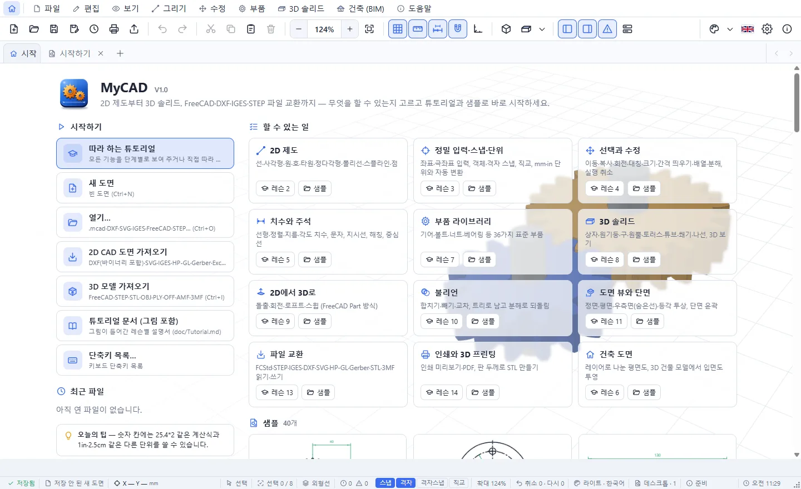
시작 페이지: 할 수 있는 일(레슨·샘플), 빠른 시작, 최근 파일, 오늘의 팁, 샘플
튜토리얼 화면
- 튜토리얼 패널은 끌어서 옮길 수 있습니다. 위쪽 목록에서 레슨을 고르고, 보기는 재생·일시 정지·이전·다음과 속도(0.5×–4×)를, 직접 하기는 보여 주기·건너뛰기를 씁니다.
- 중간 레슨부터 시작하면 앞 레슨의 결과를 자동으로 준비합니다.
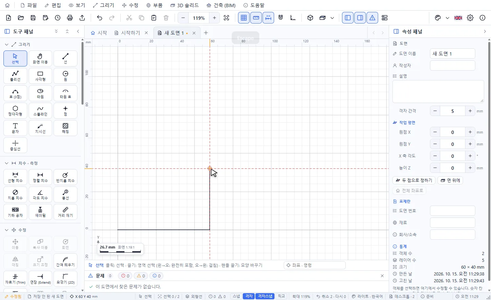
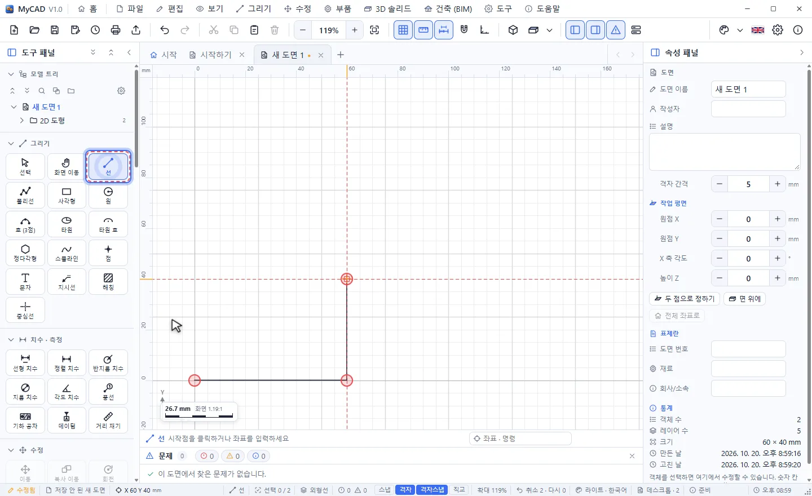
레슨 1. 둘러보기
목표
화면 구성(메뉴·툴바·탭·도구 패널·캔버스·속성 패널·상태 표시줄)을 익히고, 시작 페이지에서 샘플을 열어 확대·이동·3D 보기를 해 봅니다.
따라 하기
- 시작 페이지 — 시작 페이지에서 할 수 있는 일, 튜토리얼, 샘플, 최근 파일을 고릅니다. 메뉴 줄 맨 왼쪽의 집 버튼(또는 탭 줄의 집 탭)으로 언제든 돌아옵니다.
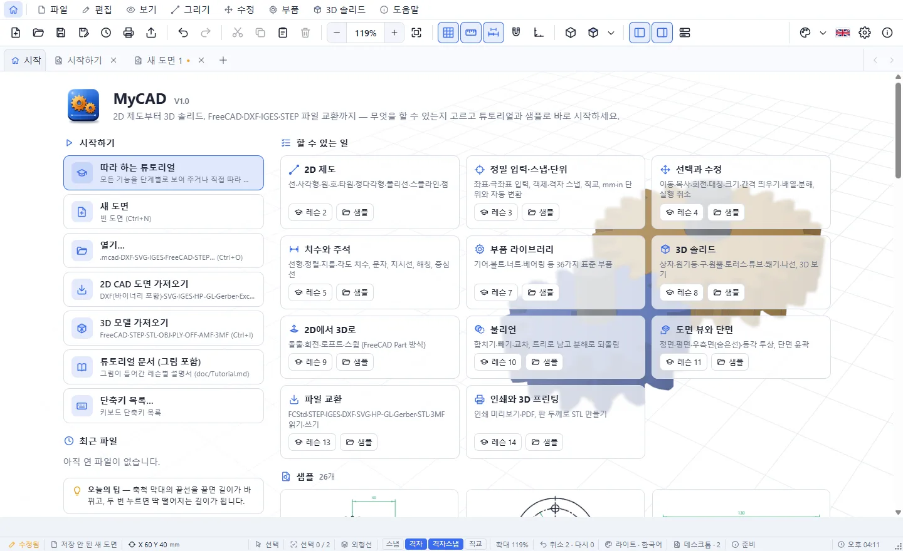
둘러보기 · 시작 페이지 - 샘플 열기 — 샘플 카드를 누르면 그 도면이 새 탭으로 열립니다. 플랜지 샘플을 엽니다.
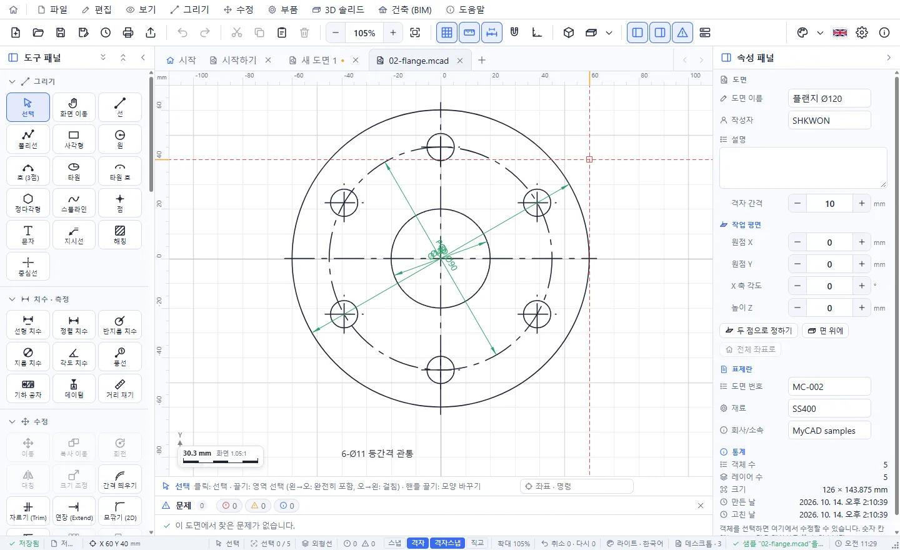
둘러보기 · 샘플 열기 - 전체 보기와 확대 — 전체 보기(Home)는 도면 전체를 화면에 맞춥니다. Ctrl+휠이나 + / − 버튼으로 확대·축소합니다.
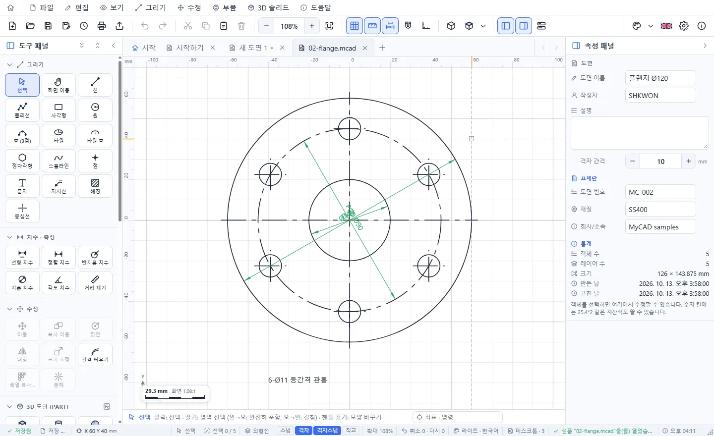
둘러보기 · 전체 보기와 확대 - 화면 이동 — 화면 이동 도구(또는 가운데 버튼·스페이스+끌기)로 도면을 옮겨 봅니다.
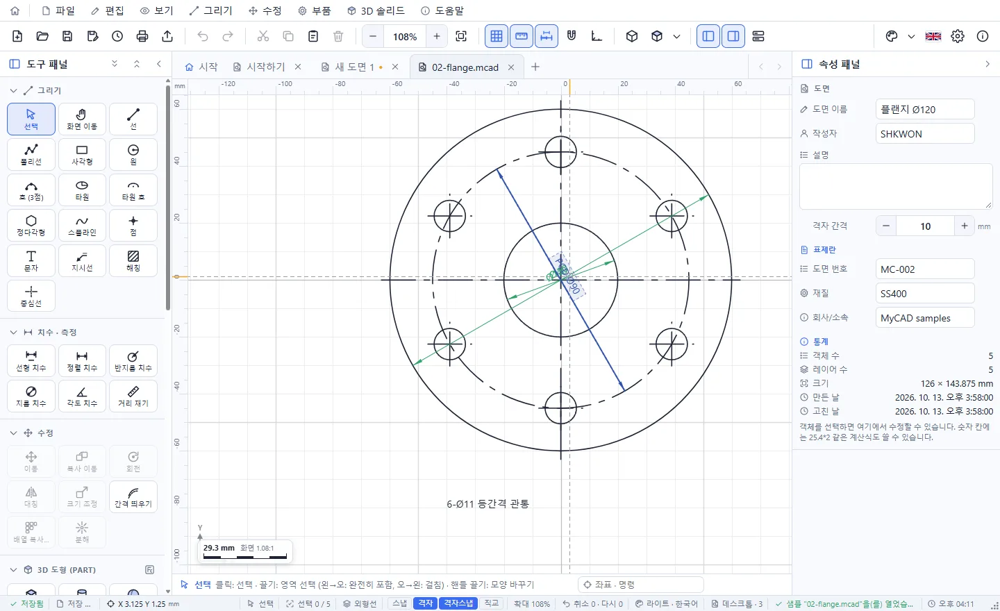
둘러보기 · 화면 이동 - 패널 접고 펴기 — 왼쪽 도구 패널과 오른쪽 속성 패널은 툴바 버튼(Ctrl+1, Ctrl+2)으로 접고 폅니다. 왼쪽 패널의 각 묶음 머리글을 누르면 그 묶음만 접힙니다.

둘러보기 · 패널 접고 펴기 - 3D 보기 — 3D 보기(Ctrl+Shift+3)는 닫힌 윤곽을 두께가 있는 판으로, 솔리드를 그대로 보여 줍니다. 다시 누르면 2D로 돌아갑니다.
둘러보기 · 3D 보기
직접 해 보기
- 메뉴 줄 맨 왼쪽의 집 버튼을 누르세요.
- 샘플에서 "플랜지"를 누르세요.
- 툴바의 확대(+) 버튼과 전체 보기 버튼을 눌러 보세요.
- 화면 이동 도구를 고르고 캔버스를 끌어 보세요.
- 툴바의 3D 보기 버튼을 누르세요.
팁
- Home 키는 전체 보기, Ctrl+휠은 커서 위치를 중심으로 확대합니다.
- 가운데 버튼을 누른 채 끌거나 스페이스를 누른 채 끌면 어떤 도구에서도 화면을 옮길 수 있습니다.
자주 하는 실수
- 샘플을 고쳐 저장하면 새 이름을 묻습니다 — 샘플 원본은 바뀌지 않습니다.
확인
레슨 2. 선과 도형 그리기
목표
2D 그리기 도구 10가지(선·사각형·원·호·타원·정다각형·폴리선·스플라인·점)를 격자에 맞춰 써 봅니다.
따라 하기
- 새 도면 — 새 도면(Ctrl+N)을 만듭니다. 격자 스냅이 켜져 있어 클릭이 5 mm 격자에 맞습니다.
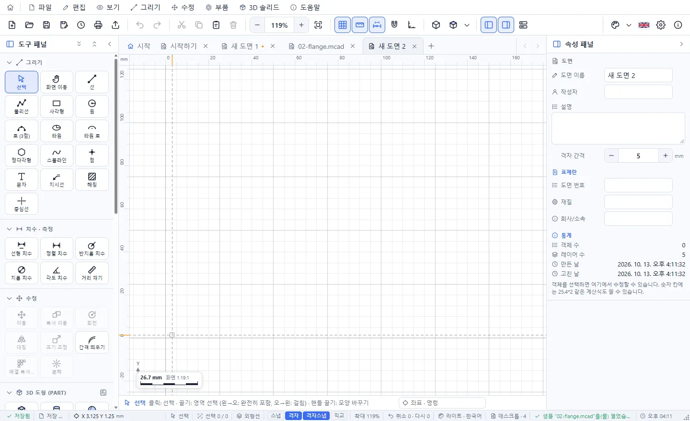
선과 도형 그리기 · 새 도면 - 선 (L) — 선 도구로 (0,0) → (60,0) → (60,40)을 클릭합니다. 클릭할 때마다 선이 이어지고 Esc로 끝냅니다.
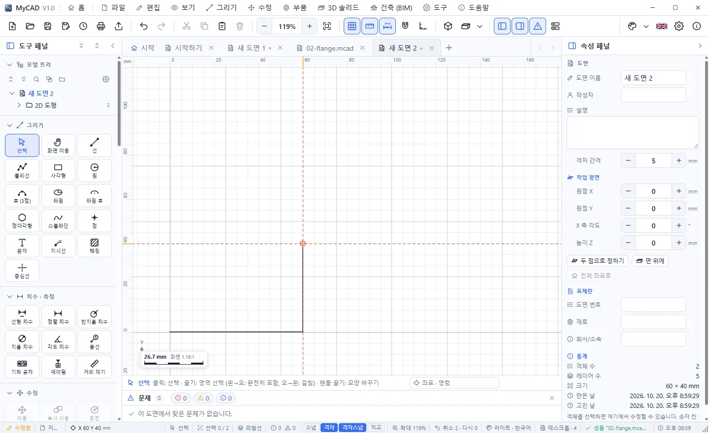
선과 도형 그리기 · 선 (L) - 사각형 (R) — 사각형은 두 모서리를 클릭합니다: (80,0)과 (140,40).
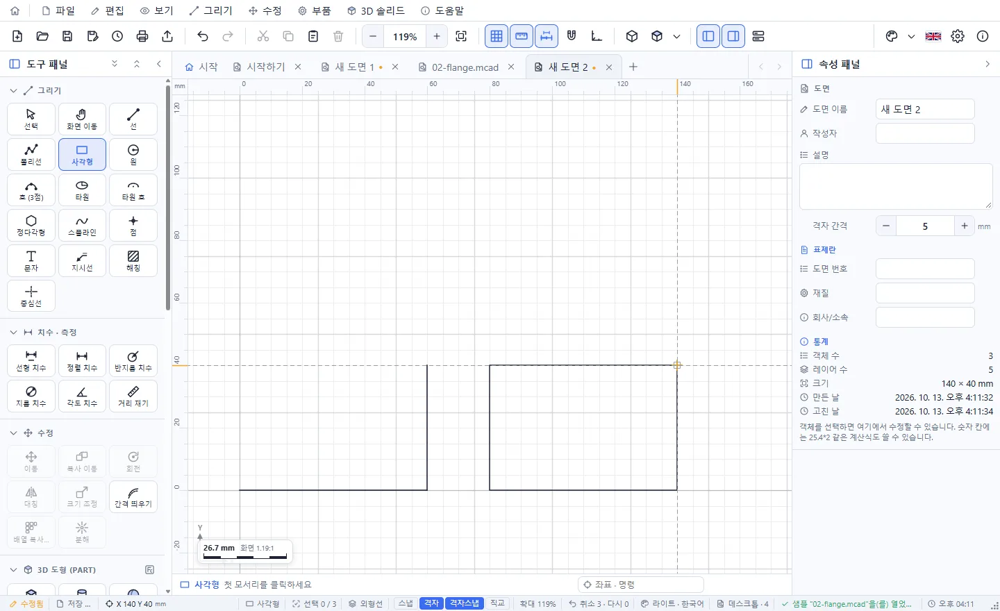
선과 도형 그리기 · 사각형 (R) - 원 (C) — 원은 중심 (20,70)을 클릭하고, 반지름 15가 되도록 (35,70)을 클릭합니다.
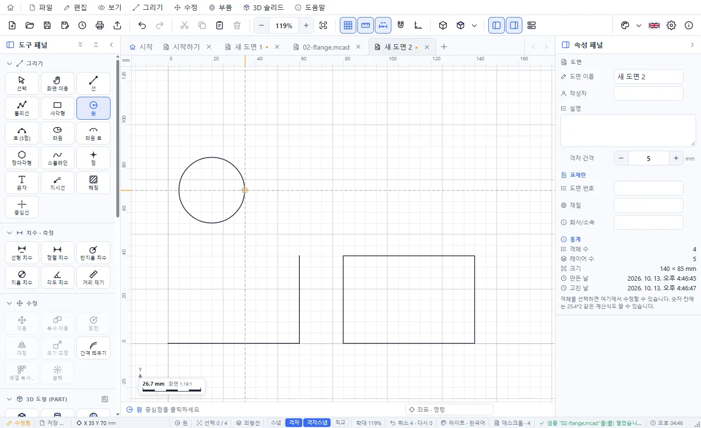
선과 도형 그리기 · 원 (C) - 호 (3점) — 호는 시작점, 지나는 점, 끝점의 세 점으로 그립니다: (45,60), (60,75), (75,60).
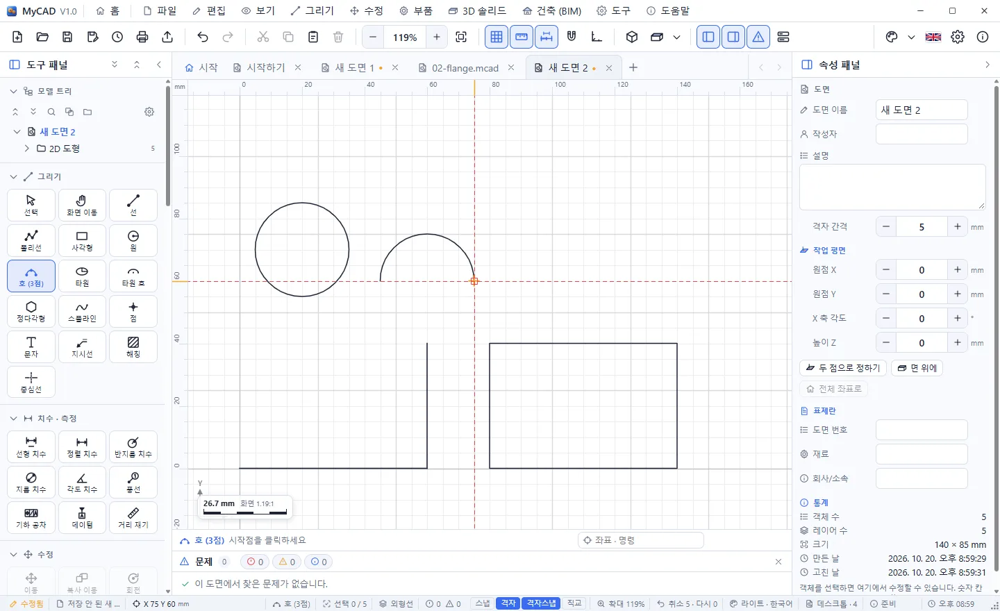
선과 도형 그리기 · 호 (3점) - 타원 — 타원은 중심 (100,70), 긴 축의 끝 (120,70), 짧은 축 반지름 (100,80)을 클릭합니다.
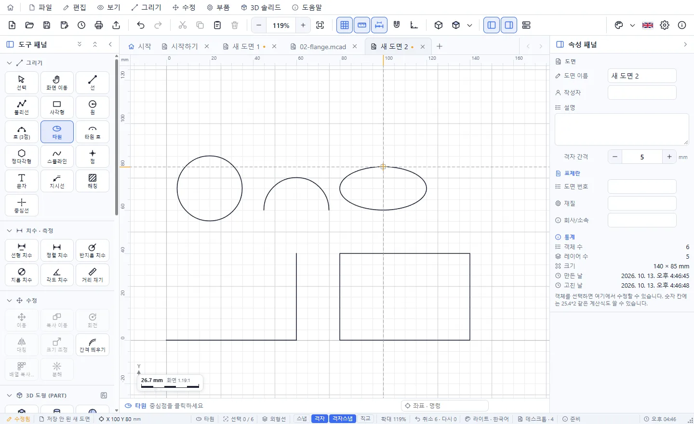
선과 도형 그리기 · 타원 - 정다각형 — 정다각형은 중심 (145,70)과 꼭짓점 (155,70)을 클릭합니다. 변의 수는 도구 옵션에서 바꿉니다.
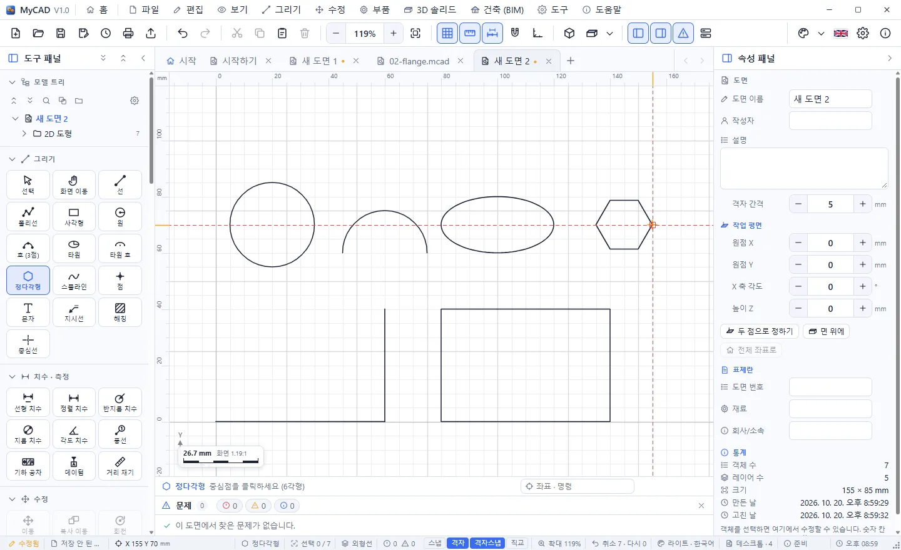
선과 도형 그리기 · 정다각형 - 폴리선 — 폴리선은 여러 점을 이어 한 객체로 만듭니다. (0,95), (30,100), (50,90), (70,100)을 클릭하고 Enter.
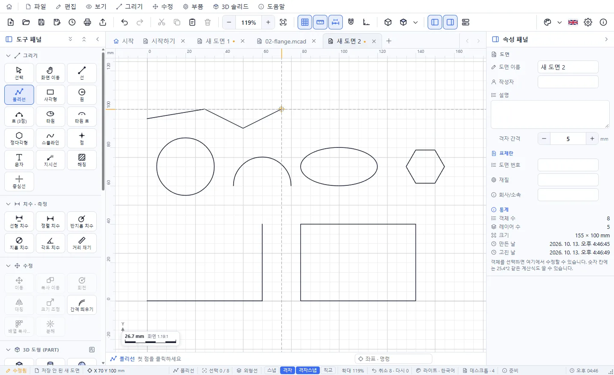
선과 도형 그리기 · 폴리선 - 스플라인 — 스플라인은 클릭한 점을 부드럽게 지나는 곡선(NURBS)입니다. (85,95), (100,105), (115,90), (130,100)을 클릭하고 Enter.
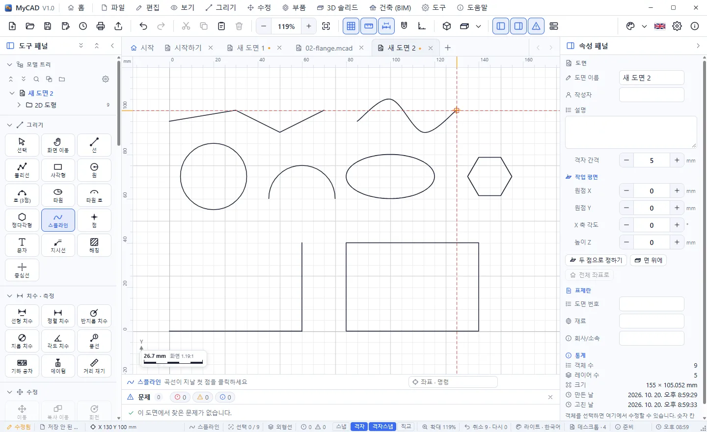
선과 도형 그리기 · 스플라인 - 점 — 점 도구는 기준점을 찍습니다: (150,95).
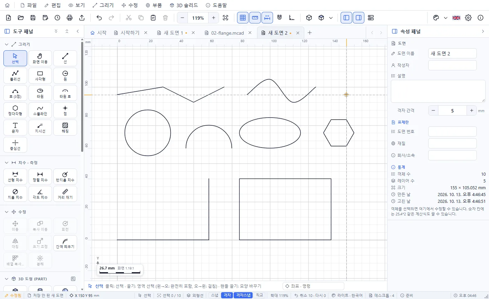
선과 도형 그리기 · 점
직접 해 보기
- 툴바의 새 도면 버튼을 누르세요.
- 선 도구로 표시된 세 점을 차례로 클릭하고 Esc를 누르세요.
- 사각형 도구로 두 모서리를 클릭하세요.
- 원 도구로 중심과 반지름 점을 클릭하세요.
- 호 도구로 세 점을 클릭하세요.
- 타원 도구로 세 점을 클릭하세요.
- 정다각형 도구로 중심과 꼭짓점을 클릭하세요.
- 폴리선 도구로 네 점을 클릭하고 Enter를 누르세요.
- 스플라인 도구로 네 점을 클릭하고 Enter를 누르세요.
- 점 도구로 표시된 곳을 클릭하세요.
팁
- 그리는 중에 오른쪽 클릭은 Enter와 같습니다(끝내기).
- 폴리선·스플라인은 첫 점을 다시 클릭하면 닫힙니다.
- 도구 단축키: L 선, R 사각형, C 원, A 호 등 — 툴팁에 나옵니다.
자주 하는 실수
- Esc를 한 번 누르면 그리던 것이 취소되고, 한 번 더 누르면 선택 도구로 돌아갑니다.
확인
레슨 3. 정밀 입력·스냅·단위
목표
좌표·상대 좌표·극좌표를 입력해 정확한 크기로 그리고, 객체 스냅·직교·길이 단위와 축척 막대를 다룹니다.
따라 하기
- 좌표 입력 — 그리는 중에 숫자를 치면 명령 칸에 들어갑니다. 선 도구에서 0,0 → @80,0 → @0,50 → @-80,0을 입력하면 정확한 크기의 선이 됩니다.
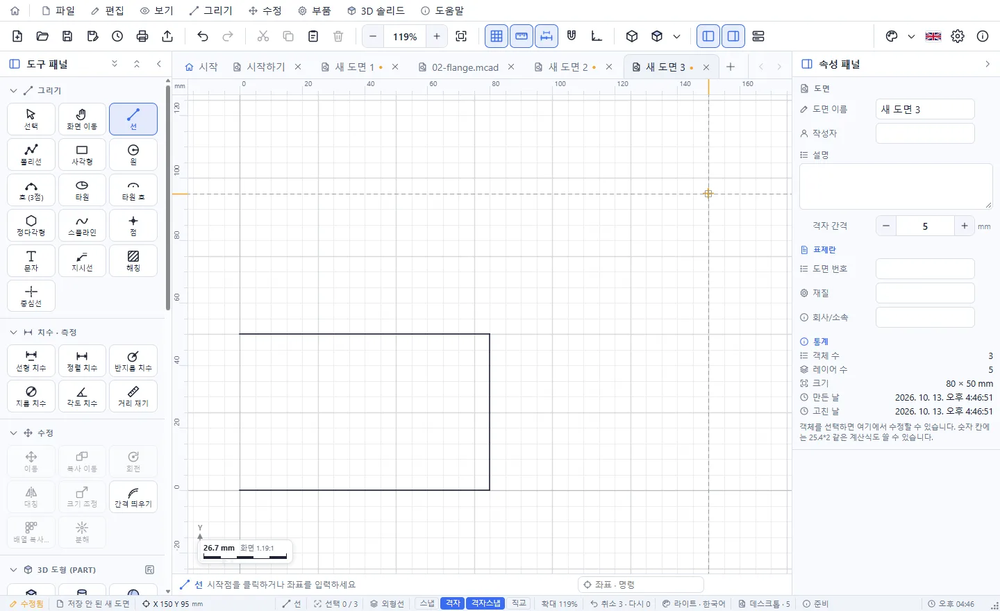
정밀 입력·스냅·단위 · 좌표 입력 - 극좌표: 거리<각도 — @40<60은 마지막 점에서 40 mm, 60° 방향입니다. 100,0에서 시작해 @40<60을 입력합니다.
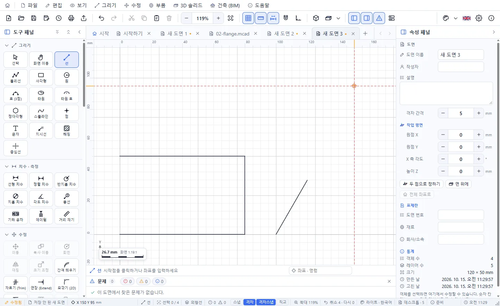
정밀 입력·스냅·단위 · 극좌표: 거리<각도 - 객체 스냅 (F3) — 객체 스냅을 켜면 커서가 끝점·중간점·중심 등에 달라붙습니다. 끝점 (80,50) 근처를 클릭해 원의 중심을 정확히 맞춥니다.
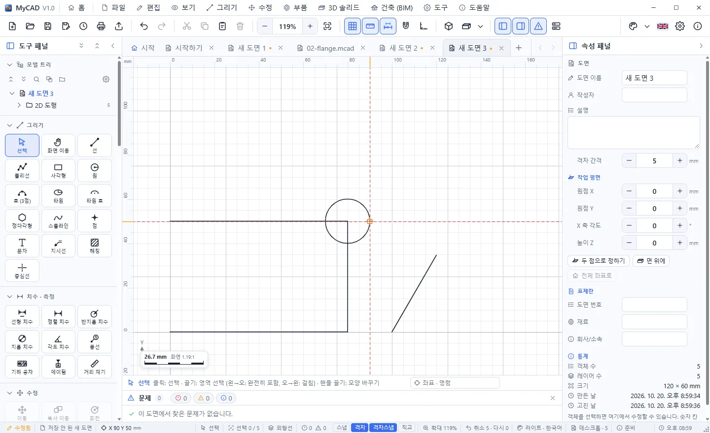
정밀 입력·스냅·단위 · 객체 스냅 (F3) - 직교 모드 (F8) — 직교 모드에서는 선이 수평·수직으로만 그려집니다.
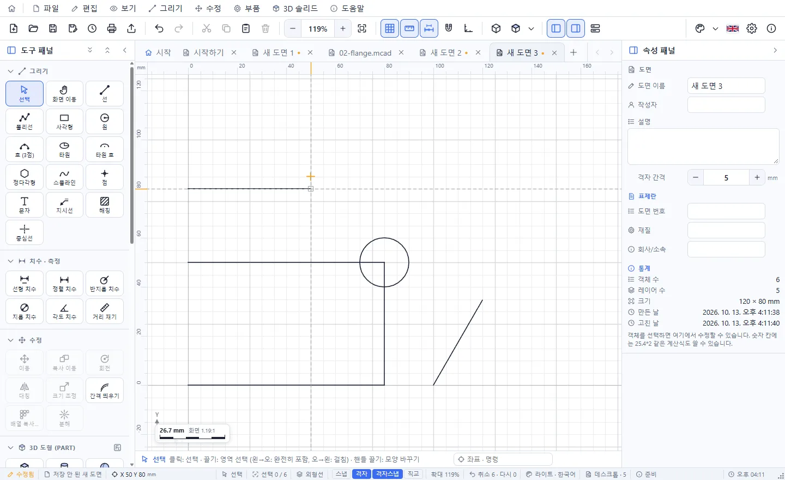
정밀 입력·스냅·단위 · 직교 모드 (F8) - 길이 단위 — 설정 › 일반 › 길이 단위에서 mm·cm·m·in·ft를 고릅니다. 도면은 mm로 저장되고 보이는 값만 바뀝니다. 인치로 바꿉니다.
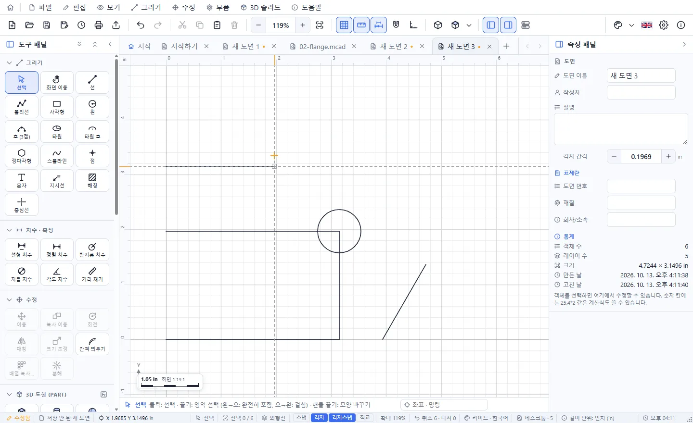
정밀 입력·스냅·단위 · 길이 단위 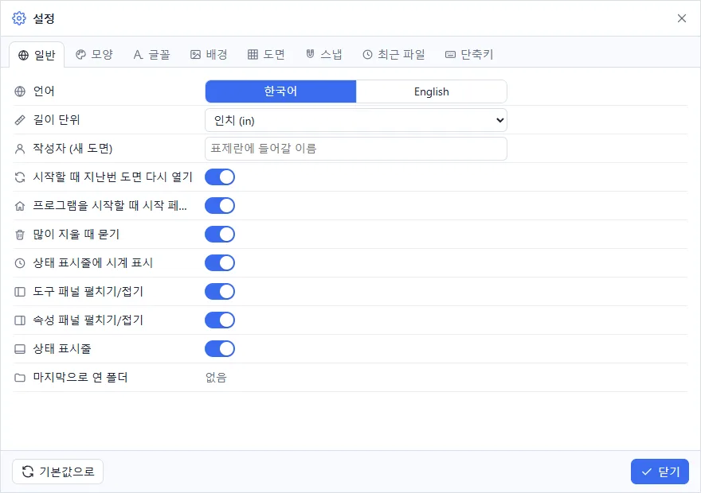
길이 단위 — 창 - 다른 단위로 입력 — 숫자 뒤에 단위를 붙이면 자동으로 바뀝니다. 원의 반지름을 25.4mm로 입력하면 1 in가 됩니다.
정밀 입력·스냅·단위 · 다른 단위로 입력 - 축척 막대 — 캔버스 왼쪽 아래 축척 막대는 막대 길이가 실제 몇 mm인지와 화면 축척을 보여 줍니다. 끌어서 옮기고, 끝선을 끌어 길이를 바꾸며, 툴바 버튼으로 켜고 끕니다.
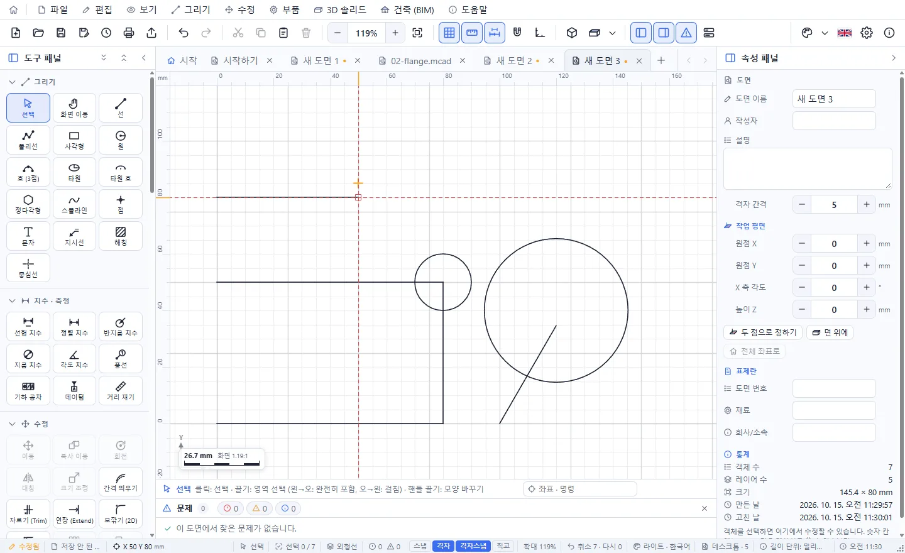
정밀 입력·스냅·단위 · 축척 막대
직접 해 보기
- 선 도구를 고르고 명령 칸에 0,0 · @80,0 · @0,50 · @-80,0을 차례로 입력하세요.
- 선 도구로 100,0을 입력한 뒤 @40<60을 입력하세요.
- 툴바의 스냅을 켜고, 원 도구로 끝점 근처를 클릭하세요.
- 직교를 켜고 비스듬히 선을 그어 보세요.
- 설정(톱니바퀴) › 일반에서 길이 단위를 인치로 바꾸세요.
- 원 도구에서 120mm,40mm 와 @25.4mm<0을 입력하세요.
팁
- 좌표에도 단위를 붙일 수 있습니다: 2in,30mm.
- 스냅 종류(끝점·중간점·중심·사분점·교차점·근처점)는 설정 › 스냅에서 고릅니다.
자주 하는 실수
- 명령 칸에 입력한 뒤 Enter를 눌러야 점이 찍힙니다.
확인
레슨 4. 선택과 수정
목표
객체를 선택하고 이동·복사·회전·대칭·크기 조정·간격 띄우기·배열·분해·삭제를 하고, 실행 취소로 되돌립니다.
따라 하기
- 준비: 사각형과 원 — 수정할 도형을 그립니다: 사각형 (0,0)–(40,30)과 원 중심 (100,20), 반지름 10.
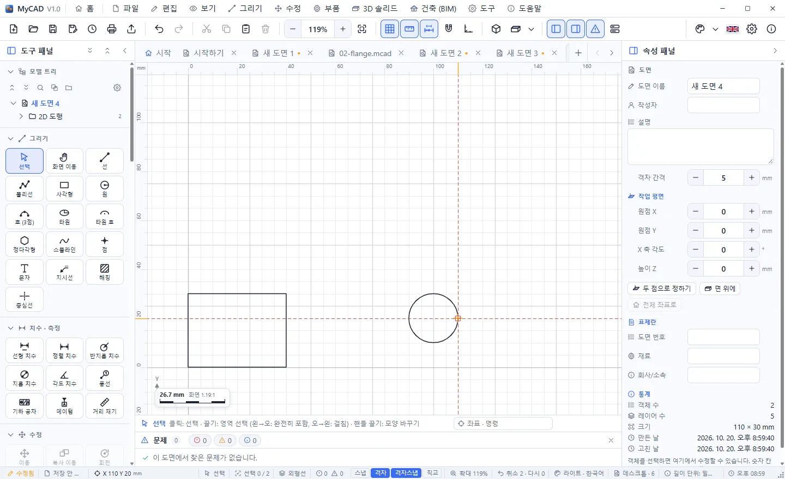
선택과 수정 · 준비: 사각형과 원 - 선택 — 선택 도구로 객체를 클릭하면 선택되고 속성 패널에 속성이 나옵니다. 왼쪽→오른쪽으로 끌면 완전히 들어간 것만, 오른쪽→왼쪽은 걸친 것까지 선택합니다.
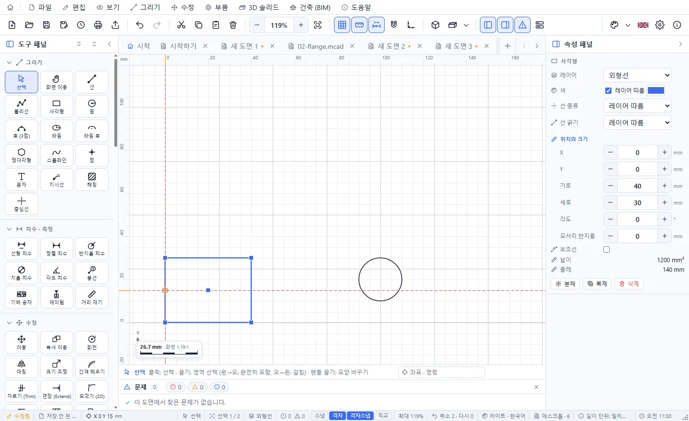
선택과 수정 · 선택 - 이동 (M) — 선택한 사각형을 이동 도구로 기준점 (0,0)에서 (10,10)으로 옮깁니다.
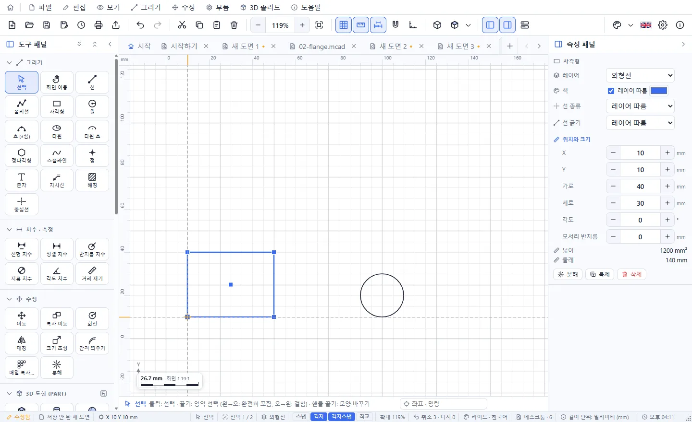
선택과 수정 · 이동 (M) - 복사 — 복사 도구는 기준점에서 여러 번 복사합니다. (10,10)에서 (60,10)으로 복사하고 Esc.
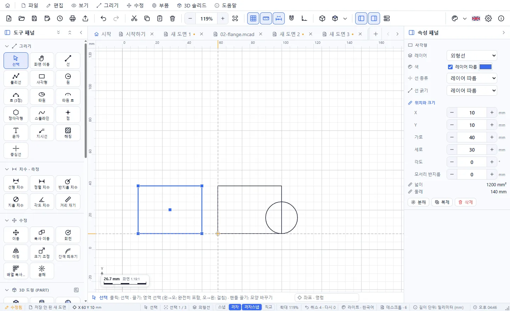
선택과 수정 · 복사 - 회전 — 복사한 사각형을 기준점 (60,10)에 대해 30° 돌립니다. 기준점을 클릭한 뒤 각도 30을 입력합니다.
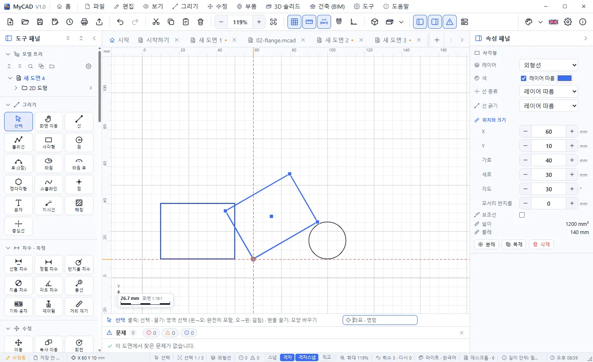
선택과 수정 · 회전 - 대칭 — 원을 x = 130 축에 대칭 복사합니다: 축의 두 점 (130,0), (130,40).
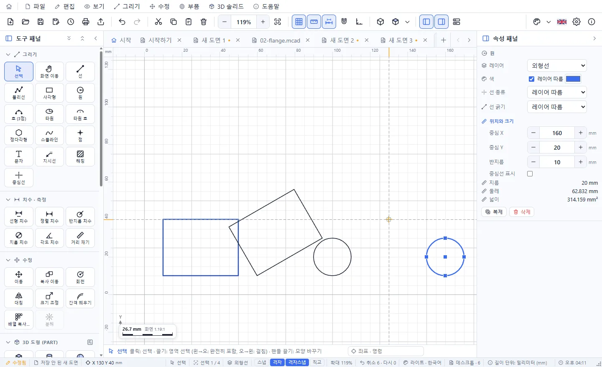
선택과 수정 · 대칭 - 크기 조정 — 첫 번째 원을 중심 (100,20)에 대해 2배로 키웁니다: 기준점을 클릭하고 2 입력.
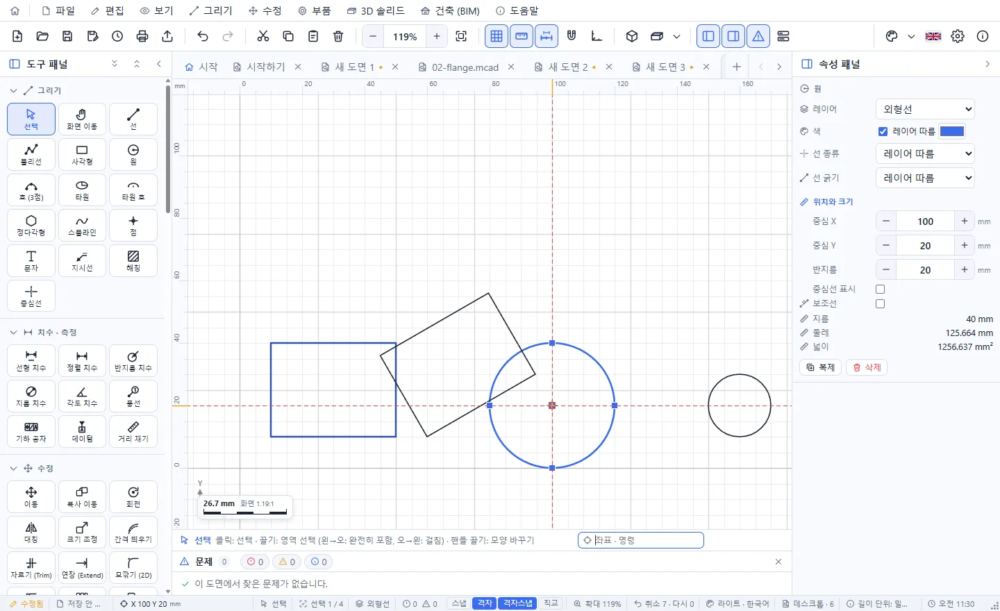
선택과 수정 · 크기 조정 - 간격 띄우기 — 간격 띄우기는 같은 모양을 일정 거리만큼 띄워 그립니다. 간격 5로 원의 바깥쪽을 클릭합니다.
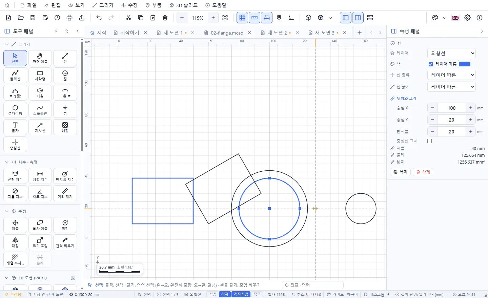
선택과 수정 · 간격 띄우기 - 배열 복사 — 배열 창에서 행·열과 간격(직사각형) 또는 개수와 각도(원형)를 정해 한 번에 복사합니다. 점을 3열 × 2행으로 복사합니다.
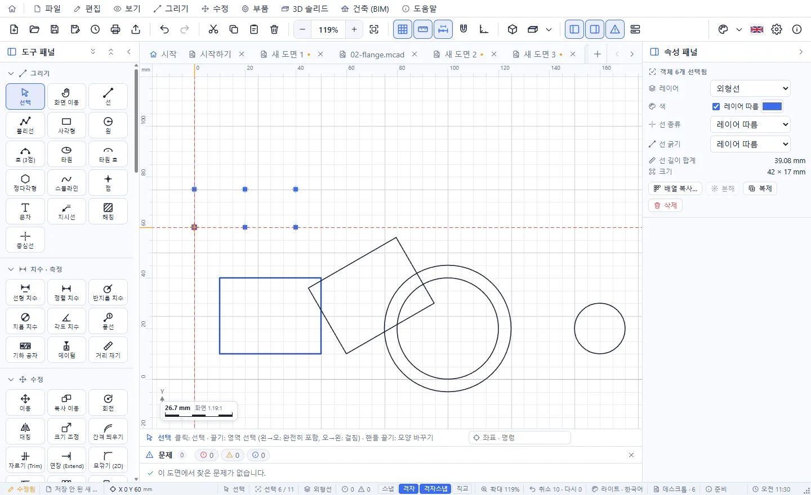
선택과 수정 · 배열 복사 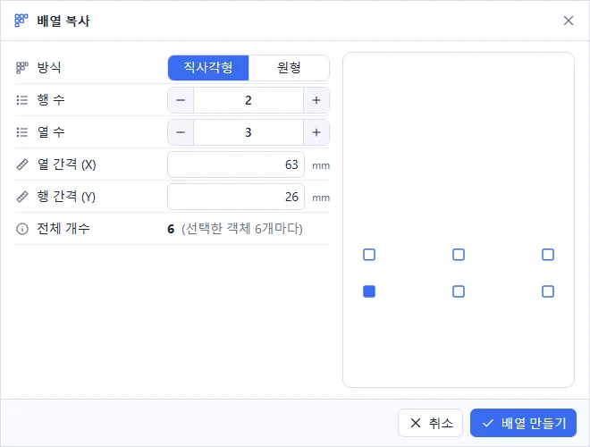
배열 복사 — 창 - 분해 — 분해는 사각형을 폴리선으로, 폴리선·다각형·부품을 선과 호로 풉니다. 사각형을 두 번 분해하면 선 네 개가 됩니다.
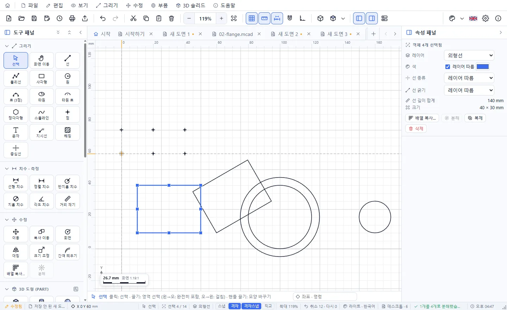
선택과 수정 · 분해 - 실행 취소·다시 실행 — Ctrl+Z로 되돌리고 Ctrl+Y로 다시 합니다. 툴바의 화살표 버튼도 같습니다.
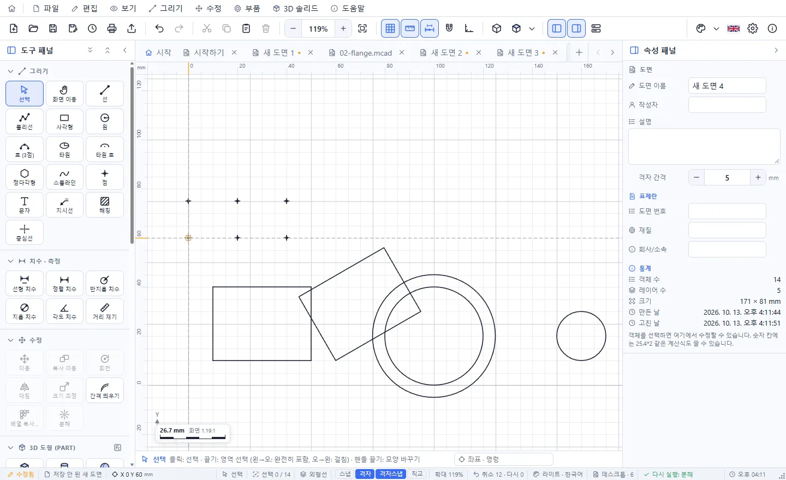
선택과 수정 · 실행 취소·다시 실행 - 삭제 — 선택한 객체는 Delete 키로 지웁니다.
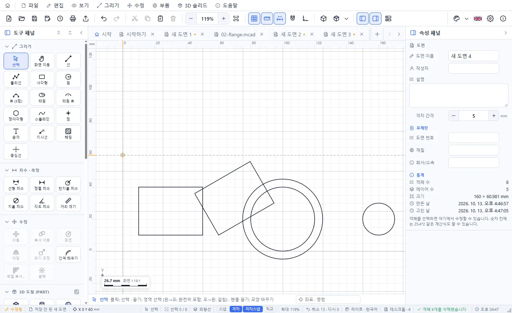
선택과 수정 · 삭제
직접 해 보기
- 사각형과 원을 그리세요.
- 사각형의 변을 클릭하세요.
- 사각형을 선택하고 이동 도구로 두 점을 클릭하세요.
- 사각형을 선택하고 복사 도구로 기준점과 새 위치를 클릭하세요.
- 사각형을 선택하고 회전 도구로 기준점을 클릭한 뒤 30을 입력하세요.
- 원을 선택하고 대칭 도구로 축의 두 점을 클릭하세요.
- 원을 선택하고 크기 조정 도구로 중심을 클릭한 뒤 2를 입력하세요.
- 간격 띄우기 도구로 원을 클릭하고 바깥쪽을 클릭하세요.
- 객체를 선택하고 수정 묶음의 "배열 복사…"를 누르세요.
- 사각형을 선택하고 분해를 누르세요.
- 점들을 선택하고 Delete를 누르세요.
팁
- Shift(또는 Ctrl)+클릭은 선택에 더하거나 뺍니다.
- 선택한 객체의 손잡이(작은 사각형)를 끌면 모양을 바로 바꿉니다.
자주 하는 실수
- 수정 도구는 먼저 선택해야 켜집니다.
확인
레슨 5. 치수와 주석
목표
선형·정렬·지름·반지름·각도 치수, 문자, 지시선, 해칭, 중심선, 거리 재기를 넣습니다.
따라 하기
- 준비: 판과 구멍 — 치수를 넣을 판 (0,0)–(100,60)과 구멍 (50,30) 반지름 20을 그립니다.
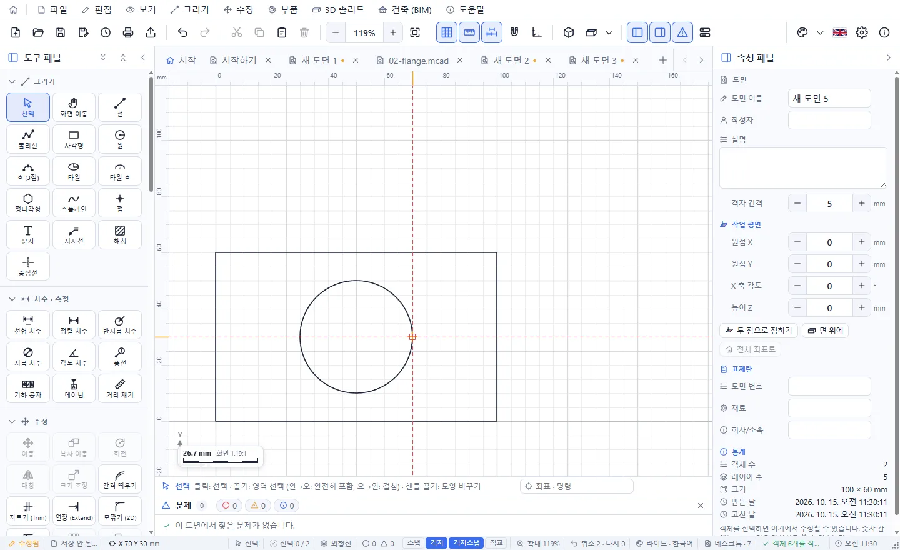
치수와 주석 · 준비: 판과 구멍 - 선형 치수 — 선형 치수: 두 점 (0,0), (100,0)을 클릭하고 치수선 위치 (50,-12)를 클릭합니다.
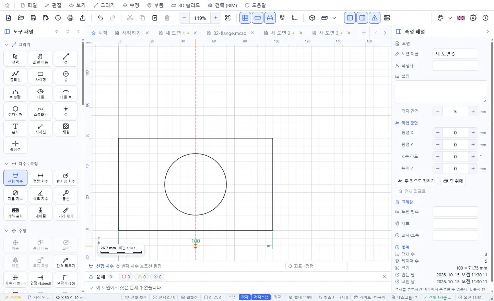
치수와 주석 · 선형 치수 - 정렬 치수 — 정렬 치수는 두 점을 잇는 방향으로 잽니다: (100,0), (100,60), 위치 (112,30).
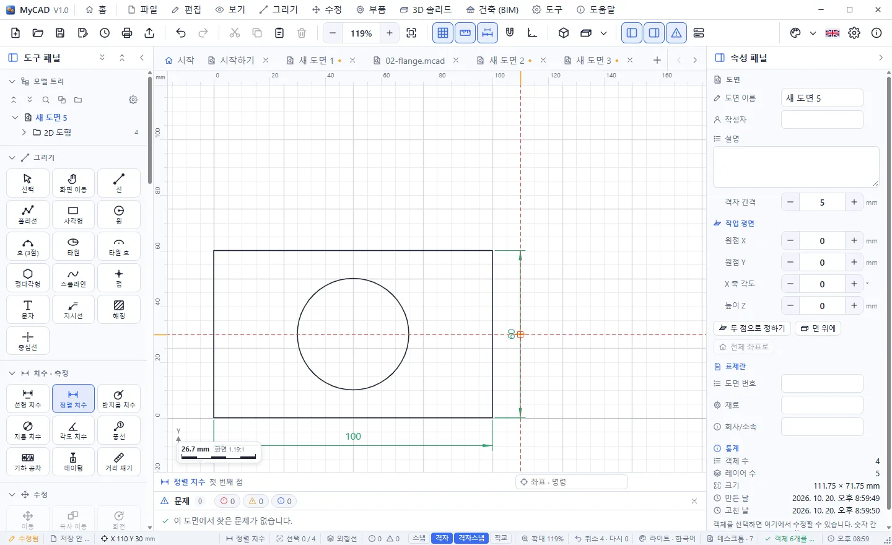
치수와 주석 · 정렬 치수 - 지름·반지름 치수 — 지름 치수: 원을 클릭하고 지시선 방향 (80,50)을 클릭합니다.
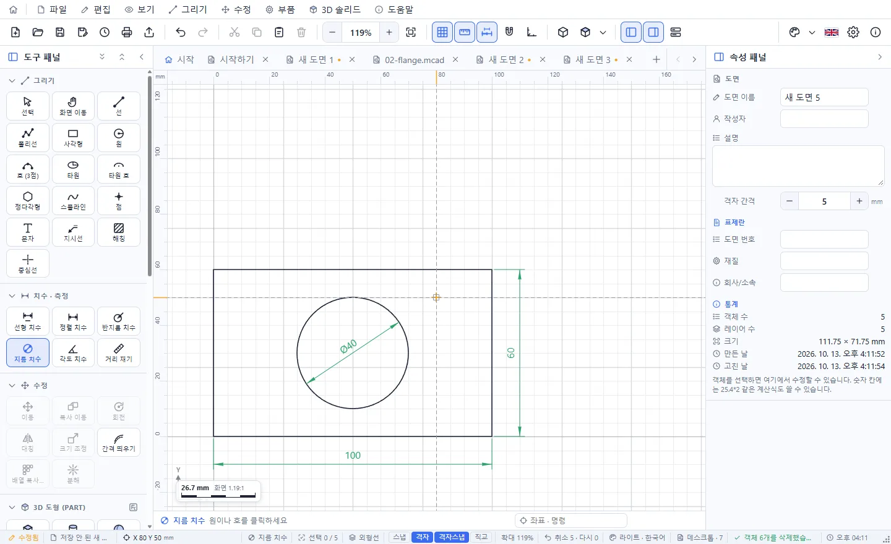
치수와 주석 · 지름·반지름 치수 - 각도 치수 — 각도 치수: 꼭짓점 (0,0), 첫 방향 (40,0), 둘째 방향 (0,40)을 클릭합니다.
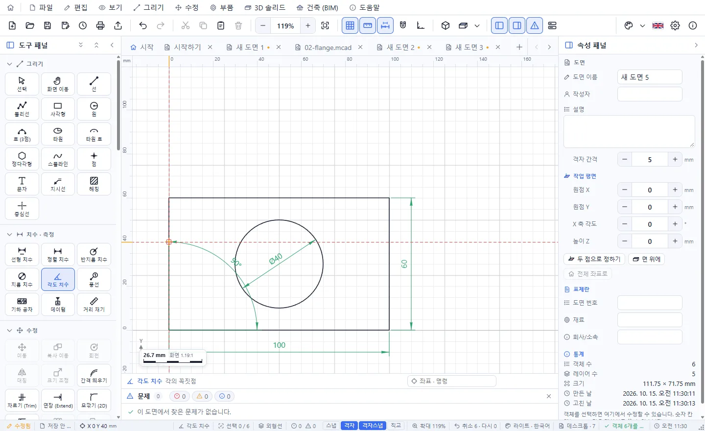
치수와 주석 · 각도 치수 - 문자 — 문자 도구로 (0,75)를 클릭하고, 속성 패널의 내용 칸에 "커버 플레이트"를 씁니다.
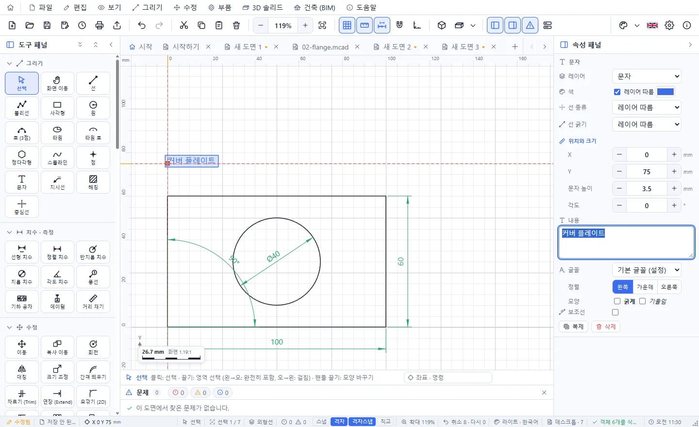
치수와 주석 · 문자 - 지시선 — 지시선: 화살표 끝 (62,38), 꺾임 (85,80), (100,80)을 클릭하고 Enter. 메모는 속성 패널에서 고칩니다.
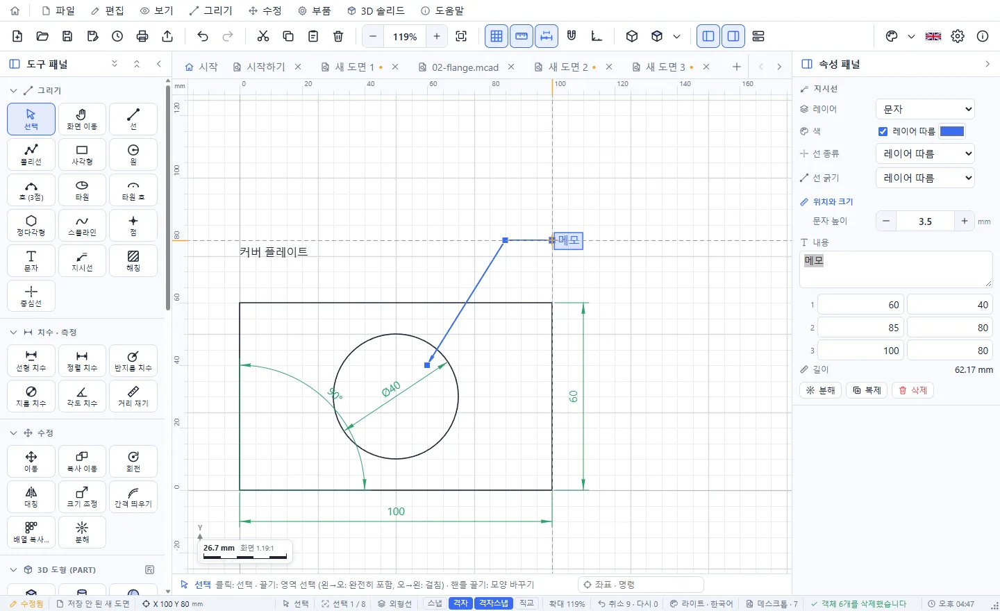
치수와 주석 · 지시선 - 해칭 — 해칭 도구로 닫힌 영역 안 (10,10)을 클릭합니다. 안쪽 원은 구멍으로 남습니다. 무늬·배율·각도는 도구 옵션입니다.
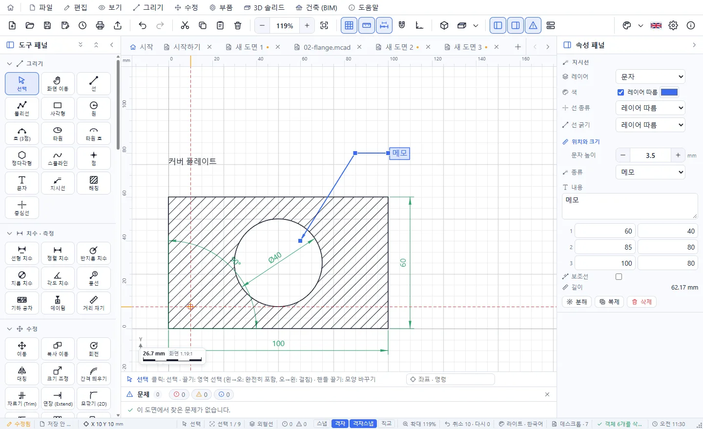
치수와 주석 · 해칭 - 중심선 — 중심선은 일점쇄선으로 중심선 레이어에 그려집니다: (30,30) → (70,30).
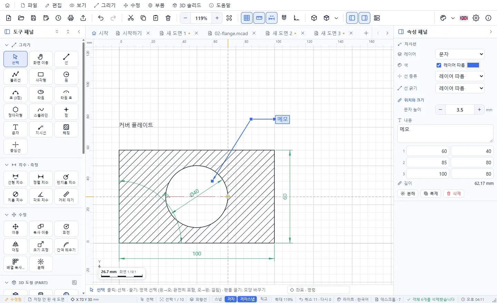
치수와 주석 · 중심선 - 거리 재기 — 거리 재기는 두 점 사이의 거리·각도·Δx·Δy를 알려 줍니다: (0,0) → (100,60).
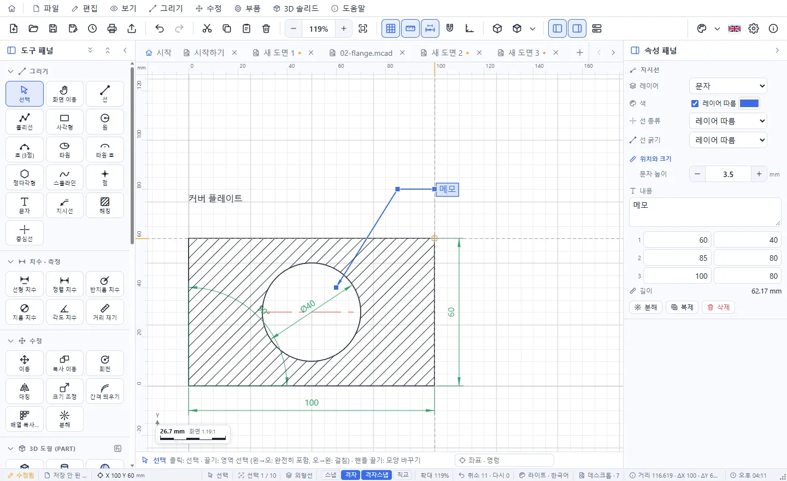
치수와 주석 · 거리 재기
직접 해 보기
- 사각형과 원을 그리세요.
- 선형 치수 도구로 세 점을 클릭하세요.
- 정렬 치수 도구로 세 점을 클릭하세요.
- 지름 치수 도구로 원과 방향을 클릭하세요.
- 각도 치수 도구로 세 점을 클릭하세요.
- 문자 도구로 클릭한 뒤 속성 패널에서 내용을 바꾸세요.
- 지시선 도구로 세 점을 클릭하고 Enter를 누르세요.
- 해칭 도구로 사각형 안(원 바깥)을 클릭하세요.
- 중심선 도구로 두 점을 클릭하세요.
- 거리 재기 도구로 두 점을 클릭하세요.
팁
- 치수 문자는 속성 패널에서 바꿉니다. <> 는 잰 값을 뜻합니다: "<> H7".
- 치수 소수 자리와 문자 높이는 설정 › 도면·글꼴에서 정합니다.
자주 하는 실수
- 해칭은 닫힌 영역 안을 클릭해야 합니다 — 열린 선만 있으면 "닫힌 윤곽이 없습니다"라고 나옵니다.
확인
레슨 6. 속성과 레이어
목표
속성 패널에서 크기·위치·스타일을 정확히 고치고(계산식·단위 포함), 레이어로 도면을 정리합니다.
따라 하기
- 속성 패널에서 고치기 — 원을 선택하고 반지름 칸에 25를 입력합니다. − / + 버튼으로 한 단계씩 바꿀 수도 있습니다.
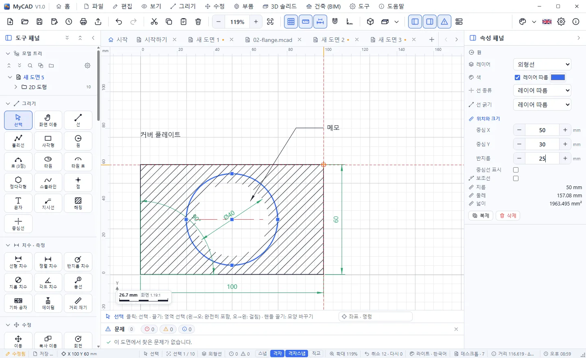
속성과 레이어 · 속성 패널에서 고치기 - 계산식과 단위 — 숫자 칸에는 계산식(10*2+2)과 다른 단위(1in)를 쓸 수 있습니다. 반지름에 1in를 입력하면 25.4 mm가 됩니다.
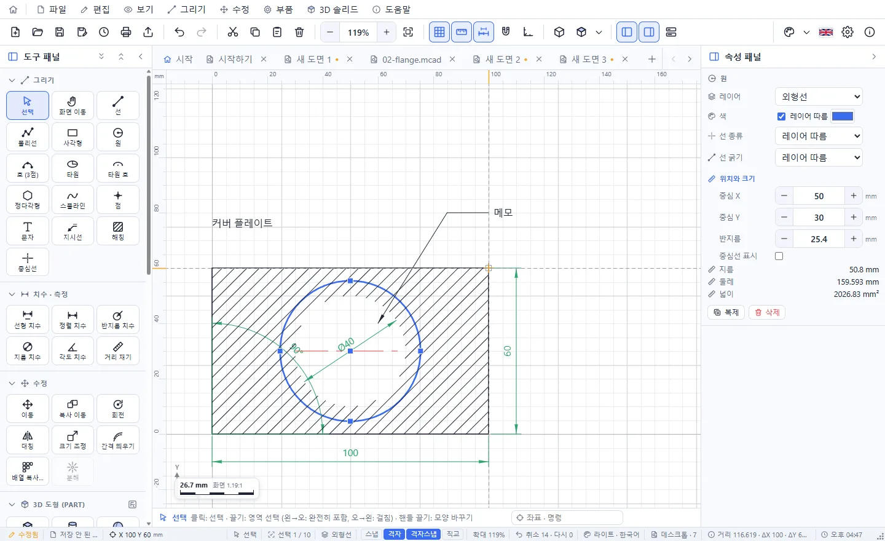
속성과 레이어 · 계산식과 단위 - 선 종류·굵기·색 — 선 종류를 파선으로, 굵기를 0.5 mm로 바꿉니다. 비워 두면 레이어를 따릅니다.
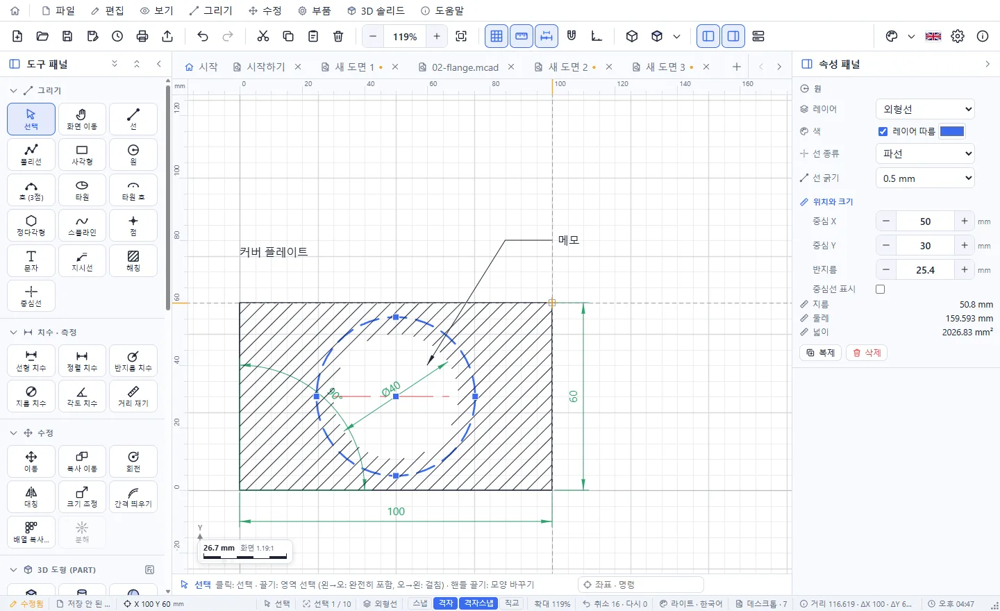
속성과 레이어 · 선 종류·굵기·색 - 레이어 — 레이어 묶음에서 새 레이어를 만들고, 눈 아이콘으로 숨기고, 자물쇠로 잠급니다. 이름을 누르면 현재 레이어가 됩니다.
속성과 레이어 · 레이어
직접 해 보기
- 원을 선택하고 속성 패널의 반지름을 바꾸세요.
- 반지름 칸에 1in를 입력하세요.
- 속성 패널에서 선 종류를 바꾸세요.
- 레이어 묶음의 "레이어 추가"를 누르세요.
팁
- − / + 버튼은 길이 단위에 맞는 간격(mm 1, in 0.125…)으로 바꿉니다.
- 잠근 레이어의 객체는 선택되지 않습니다.
자주 하는 실수
- 여러 객체를 선택하면 공통 속성(레이어·색·선)만 나옵니다.
확인
레슨 7. 부품 라이브러리
목표
부품 라이브러리에서 기어·볼트 등 표준 부품을 넣고 치수를 바꿉니다.
따라 하기
- 기어 넣기 — 부품 묶음에서 기어를 고르면 부품 창이 열립니다. 모듈·잇수를 정하고 넣기를 누른 뒤 도면에 클릭해 놓습니다.
부품 라이브러리 · 기어 넣기 기어 넣기 — 창 - 볼트와 너트 — ISO 볼트·너트·와셔·베어링 등 36가지 부품이 있습니다. M10 볼트를 놓습니다.
부품 라이브러리 · 볼트와 너트 - 부품 치수 바꾸기 — 부품을 선택하면 속성 패널에서 치수를 바로 바꿉니다. 기어 잇수를 30으로 바꿉니다.
부품 라이브러리 · 부품 치수 바꾸기
직접 해 보기
- 부품 묶음에서 기어를 넣으세요.
- 부품 묶음에서 볼트를 넣으세요.
- 기어를 선택하고 잇수를 바꾸세요.
팁
- 부품을 분해하면 일반 선과 호가 되어 자유롭게 고칠 수 있습니다.
자주 하는 실수
- 부품 창에서 넣기를 누른 뒤 도면을 클릭해야 놓입니다.
확인
레슨 8. 3D 솔리드
목표
FreeCAD Part 방식의 3D 솔리드를 넣고 3D 보기에서 돌려 보며 위치를 바꿉니다.
따라 하기
- 상자 넣기 — 3D 도형 묶음의 상자를 누르면 솔리드 창에서 크기와 위치를 정합니다. 60 × 40 × 20 상자를 넣습니다.
3D 솔리드 · 상자 넣기 - 원기둥 — 원기둥(반지름 10, 높이 40)을 상자 위 (30,20)에 넣습니다. 원뿔·구·토러스·튜브·쐐기·각기둥·타원체·나선도 같습니다.
3D 솔리드 · 원기둥 원기둥 — 창 - 3D로 보기 — 3D 보기로 바꿉니다. 왼쪽 끌기로 돌리고, 휠로 확대하며, 오른쪽 끌기로 옮깁니다.
3D 솔리드 · 3D로 보기 - 시점 바꾸기 — 3D 막대에서 위·정면·오른쪽·등각 시점을 고릅니다.
3D 솔리드 · 시점 바꾸기 - 위치와 회전 — 솔리드를 선택하면 속성 패널에서 X·Y·Z 위치와 회전을 바꿉니다. 원기둥을 z = 20으로 올립니다.
3D 솔리드 · 위치와 회전 - 2D로 돌아가기 — 3D 보기 버튼을 다시 누르면 2D로 돌아갑니다. 솔리드는 2D에서 윤곽으로 보입니다.
3D 솔리드 · 2D로 돌아가기
직접 해 보기
- 3D 도형 묶음에서 상자를 넣으세요.
- 원기둥을 넣으세요.
- 3D 보기 버튼을 누르세요.
- 원기둥을 선택하고 Z를 바꾸세요.
- 3D 보기 버튼을 다시 누르세요.
팁
- 3D 보기에서 솔리드를 클릭하면 선택되고 속성이 나옵니다.
- 솔리드 창의 미리보기는 음영 등각 투상입니다.
자주 하는 실수
- 2D에서는 솔리드가 바닥 윤곽으로만 보입니다 — 3D 보기로 확인하세요.
확인
레슨 9. 2D에서 3D로: 돌출·회전·로프트·스윕
목표
2D 윤곽에서 돌출·회전·로프트·스윕으로 3D 솔리드를 만듭니다.
따라 하기
- 돌출 (Pad) — 닫힌 윤곽(사각형 + 안쪽 원)을 선택하고 돌출하면 구멍 뚫린 판이 됩니다. 높이 15.
2D에서 3D로: 돌출·회전·로프트·스윕 · 돌출 (Pad) - 회전 (Revolve) — 단면 윤곽을 축 둘레로 돌립니다. (80,0)–(95,0)–(95,30)–(85,30)–(80,0) 폴리선을 그려 Y축 둘레로 360° 돌립니다.
2D에서 3D로: 돌출·회전·로프트·스윕 · 회전 (Revolve) - 로프트 (Loft) — 두 윤곽 사이를 부드럽게 잇습니다. 사각형과 원을 선택해 높이 30으로 로프트합니다.
2D에서 3D로: 돌출·회전·로프트·스윕 · 로프트 (Loft) - 스윕 (Sweep) — 경로를 따라 원형 단면을 쓸어 관을 만듭니다. 폴리선 경로를 그려 반지름 3으로 스윕합니다.
2D에서 3D로: 돌출·회전·로프트·스윕 · 스윕 (Sweep)
직접 해 보기
- 사각형과 원을 그려 선택하고 "돌출"을 누르세요.
- 닫힌 폴리선을 선택하고 "회전"을 누르세요.
- 두 윤곽을 선택하고 "로프트"를 누르세요.
- 열린 폴리선을 선택하고 "스윕"을 누르세요.
팁
- 돌출은 바깥 윤곽 안의 윤곽을 구멍으로 만듭니다.
- 로프트는 선택한 순서대로 아래·위가 됩니다.
자주 하는 실수
- 회전 윤곽은 축을 가로지르면 안 됩니다.
확인
레슨 10. 불리언: 빼기·합치기·교차
목표
불리언(빼기·합치기·교차)으로 솔리드를 결합하고, 분해로 되돌립니다.
따라 하기
- 빼기 (Cut) — 판(상자)에서 원기둥을 빼 구멍을 뚫습니다. 판을 먼저, 원기둥을 다음에 선택하고 빼기를 누릅니다.
불리언: 빼기·합치기·교차 · 빼기 (Cut) - 합치기 (Fuse) — 두 솔리드를 하나로 합칩니다. 구멍 뚫린 판과 새 상자를 합칩니다.
불리언: 빼기·합치기·교차 · 합치기 (Fuse) - 분해로 되돌리기 — 불리언은 FreeCAD처럼 트리로 남습니다. 분해하면 원래 솔리드로 돌아갑니다.
불리언: 빼기·합치기·교차 · 분해로 되돌리기
직접 해 보기
- 두 솔리드를 선택하고 "빼기"를 누르세요.
- 두 솔리드를 선택하고 "합치기"를 누르세요.
- 불리언 솔리드를 선택하고 분해를 누르세요.
팁
- 빼기는 처음 선택한 솔리드에서 나머지를 뺍니다.
- 불리언 결과는 FreeCAD의 Part::Cut/MultiFuse로 저장됩니다.
자주 하는 실수
- 솔리드를 두 개 이상 선택해야 불리언이 켜집니다.
확인
레슨 11. 도면 뷰와 단면
목표
솔리드에서 3각법 투영 도면(숨은선 포함)과 등각 투상, 단면 윤곽을 만듭니다.
따라 하기
- 투영 도면 만들기 — 솔리드에서 정면·평면·우측면(숨은선 포함)과 등각 투상도를 자동으로 그립니다.
도면 뷰와 단면 · 투영 도면 만들기 투영 도면 만들기 — 창 - 단면 — 높이 z = 5에서 자른 단면 윤곽을 그립니다.
도면 뷰와 단면 · 단면
직접 해 보기
- 솔리드를 선택하고 "도면 뷰 만들기"를 누르세요.
- 솔리드를 선택하고 "단면 만들기"를 누르세요.
팁
- 숨은선은 숨은선 레이어에 들어갑니다 — 레이어로 숨길 수 있습니다.
확인
레슨 12. 3D 보기 자세히
목표
3D 보기의 시점·와이어프레임·좌표축과 광원(해)을 다룹니다.
따라 하기
- 보기 스타일과 좌표축 — 3D 막대의 스타일 단추로 기본 · 음영 · 숨은선 · X-Ray · 스케치 · 와이어프레임 등 10가지 보기를 고릅니다. 좌표축(눈금 포함)도 켜고 끕니다. 바닥 격자는 확대해도 5 × 5 칸으로 보입니다.
3D 보기 자세히 · 보기 스타일과 좌표축 - 광원 (해) — 해 아이콘을 끌어 빛의 방향을 바꾸고, 두 번 누르면 켜고 끕니다. 해를 클릭하면 방위·고도·세기·색·그림자가 속성 패널에 나옵니다.
3D 보기 자세히 · 광원 (해) - 2D로 — 3D 보기를 닫습니다.
3D 보기 자세히 · 2D로
직접 해 보기
- 3D 막대의 스타일 단추를 눌러 X-Ray 나 스케치를 골라 보세요.
- 해를 끌거나 클릭해 속성 패널에서 방위를 바꾸세요.
- 3D 보기 버튼을 누르세요.
팁
- Ctrl+Shift+G로 광원을 켜고 끕니다.
- 3D 바닥 격자도 2D처럼 확대해도 5×5 칸이 유지됩니다.
확인
레슨 13. 파일: 저장·열기·가져오기·내보내기
목표
도면을 저장·열고, 다른 CAD 형식(DXF·SVG·IGES·HP-GL·Gerber·Excellon·FreeCAD·STEP)을 가져오고 내보냅니다.
따라 하기
- 저장과 열기 — Ctrl+S로 .mcad 파일로 저장하고 Ctrl+O로 엽니다. 최근 파일 목록과 마지막 폴더를 기억하며, 시작할 때 지난 도면을 다시 엽니다.
파일: 저장·열기·가져오기·내보내기 · 저장과 열기 - 다른 CAD 도면 열기 — DXF(텍스트·바이너리, R12–2018), SVG, IGES, HP-GL, Gerber, Excellon을 엽니다. FreeCAD가 만든 IGES를 엽니다.
파일: 저장·열기·가져오기·내보내기 · 다른 CAD 도면 열기 - PCB 거버 — Gerber는 PCB 동박·실크 레이어의 표준 형식입니다. 패드·배선(선 굵기 유지)·구리 영역이 그대로 열립니다.

파일: 저장·열기·가져오기·내보내기 · PCB 거버 - 내보내기 — 내보내기 메뉴: DXF R12·2000, SVG, IGES, HP-GL/2, PNG, 3D 프린팅(STL), 그리고 FreeCAD·STEP·3MF 등 3D 형식.

파일: 저장·열기·가져오기·내보내기 · 내보내기 내보내기 — 창 - 끌어 놓기 — 탐색기에서 도면·3D 모델 파일을 끌어다 놓으면 열리고, 그림은 배경이 되며, 글은 문자로 붙습니다.
파일: 저장·열기·가져오기·내보내기 · 끌어 놓기
직접 해 보기
- 시작 페이지의 "파일 교환" 샘플이나 열기(Ctrl+O)로 DXF·IGES·SVG 파일을 여세요.
- Gerber 샘플을 열어 보세요.
팁
- 바이너리 DXF와 옛 ANSI(cp949 등) DXF도 열립니다.
- 지원 형식 전체는 도움말 › 프로그램 정보 › 지원 파일 형식에 있습니다.
자주 하는 실수
- 가져온 도면은 저장할 때 .mcad 이름을 묻습니다(원본 형식은 그대로).
확인
레슨 14. 인쇄와 3D 프린팅
목표
인쇄 미리보기로 용지에 맞춰 인쇄·PDF로 저장하고, STL로 3D 프린팅 파일을 만듭니다.
따라 하기
- 인쇄 미리보기 — 인쇄(Ctrl+P) 창에서 용지·방향·여백·축척·표제란·흑백과 인쇄할 범위(도면·레이어·선택)를 정합니다. PDF로도 저장됩니다.

인쇄와 3D 프린팅 · 인쇄 미리보기 인쇄 미리보기 — 창 - 3D 프린팅 (STL) — STL 창은 닫힌 윤곽을 두께가 있는 판으로 만들어 미리 보여 줍니다(구멍 포함). 솔리드도 같이 들어갑니다.
인쇄와 3D 프린팅 · 3D 프린팅 (STL) 3D 프린팅 (STL) — 창
팁
- 흑백 인쇄를 켜면 색 선도 검게 나옵니다.
확인
레슨 15. 설정과 모양
목표
설정 창의 각 탭과 테마·툴바·패널 모양을 바꿉니다.
따라 하기
- 설정 창 — 설정(Ctrl+,)에는 일반·모양·글꼴·배경·도면·스냅·최근 파일·단축키 탭이 있습니다.
설정과 모양 · 설정 창 설정 창 — 창 - 테마 — 테마 버튼은 다음 테마로, ▾는 다크·라이트 40가지 테마를 고르는 창을 엽니다. 사용자 정의 테마도 만들 수 있습니다.
설정과 모양 · 테마 - 툴바와 패널 묶음 — 창이 좁으면 툴바를 두 줄로 바꿉니다. 왼쪽 패널의 묶음 머리글을 눌러 접고, 위쪽 버튼으로 모두 접거나 폅니다.

설정과 모양 · 툴바와 패널 묶음
직접 해 보기
- 테마 버튼을 눌러 보세요.
팁
- 사용자 정의 테마는 모양 탭에서 색을 하나씩 고릅니다.
확인
레슨 16. 도움말
목표
도움말: 기능표, 프로그램 정보(지원 형식), 튜토리얼과 이 문서.
따라 하기
- 기능표 — 도움말 › 기능표는 FreeCAD의 기능과 하나씩 맞대어 지원·부분 지원·미지원을 보여 줍니다.

도움말 · 기능표 기능표 — 창 - 프로그램 정보와 지원 형식 — 프로그램 정보(F1)에는 빌드 정보와 "지원 파일 형식" 탭이 있습니다.

도움말 · 프로그램 정보와 지원 형식 프로그램 정보와 지원 형식 — 창 - 튜토리얼 다시 보기 — 튜토리얼은 도움말 메뉴와 시작 페이지에서 언제든 다시 엽니다. doc/Tutorial.md에 그림과 함께 같은 내용이 있습니다.
도움말 · 튜토리얼 다시 보기
팁
- 튜토리얼 동영상은 프로젝트 폴더의 MyCAD-Tutorial.mp4입니다.
확인
레슨 17. 조립과 움직임
목표
따라 하기
- 움직이는 샘플 — 샘플 "단기통 엔진 (움직임)"을 열면 3D 보기에서 바로 움직입니다. 크랭크 · 커넥팅 로드 · 피스톤이 조인트로 이어져 닫힌 고리를 이루고, MyCAD 가 매 순간 고리를 풀어 피스톤 자리를 구합니다 (FreeCAD Assembly).
조립과 움직임 · 움직이는 샘플 - 재생 막대 — 3D 보기 아래의 재생 막대: 재생 · 일시 정지, 처음으로, 시간 슬라이더(끌면 그 순간), 반복 · 왕복 · 한 번, 한 바퀴 시간. 저장 단추는 지금 자세를 도면에 남깁니다.
조립과 움직임 · 재생 막대 - 조인트와 구동 — 솔리드 두 개를 차례로 고르고(먼저 고른 것이 바탕) 3D 솔리드 메뉴의 회전 조인트를 누르면 경첩이 생깁니다. 속성 패널에서 구동 시작 → 끝 값을 정하면 재생할 때 그만큼 돕니다. 기어 · 벨트 · 랙 · 나사는 연동 비율로 잇습니다.
조립과 움직임 · 조인트와 구동
직접 해 보기
- 시작 페이지에서 "단기통 엔진 (움직임)" 샘플을 여세요.
- 재생 막대의 일시 정지 단추를 누르세요.
- 솔리드 두 개를 차례로 고르고 회전 조인트를 넣으세요.
확인
레슨 18. 정확한 솔리드 (OpenCASCADE)
목표
따라 하기
- 곡면 위 불리언 — FreeCAD 와 같은 OpenCASCADE 커널로 불리언 · 모깎기 · 구배가 곡면 그대로 계산되고 부피도 정확합니다. STEP · IGES · FCStd 로 내보내도 원통 · 구 같은 곡면이 그대로 갑니다.
정확한 솔리드 (OpenCASCADE) · 곡면 위 불리언 - 모깎기와 구배 — 솔리드를 고르고 3D 솔리드 › 모깎기로 모서리를 둥글게, 구배(Draft)로 옆면을 기울입니다 — 주조 · 사출의 빼기 구배.
정확한 솔리드 (OpenCASCADE) · 모깎기와 구배 - 3D 에서 모서리 고르기 — 모깎기를 선택하고 속성 패널의 "3D 에서 모서리 고르기"를 누르면 모서리가 파랗게 보입니다. 누르는 모서리만 둥글게 됩니다(주황). 고른 모서리는 위치 · 방향으로 기억해 상자 크기가 바뀌어도 다시 찾습니다 (위상 이름).
정확한 솔리드 (OpenCASCADE) · 3D 에서 모서리 고르기
직접 해 보기
- 두 솔리드를 고르고 빼기를 누르세요.
- 솔리드를 고르고 모깎기나 구배를 넣으세요.
- 모깎기를 고르고 "3D 에서 모서리 고르기"를 눌러 모서리 하나를 누르세요.
확인
레슨 19. CAM 3D 가공과 시뮬레이션
목표
따라 하기
- 3D 황삭 · 정삭 — 솔리드를 고르고 CAM 을 열면 3D 가공이 골라집니다. 황삭은 층마다 남길 두께를 두고 깎고, 정삭은 볼 엔드밀이 표면을 따라갑니다(드롭 커터: 공구가 모델을 파고들지 않음).
CAM 3D 가공과 시뮬레이션 · 3D 황삭 · 정삭 3D 황삭 · 정삭 — 창 - 시뮬레이션과 가공 결과 — CAM 창의 시뮬레이션 탭에서 재생하면 소재가 깎이는 모습을 보고 과절삭 · 남은 살을 검사합니다. "가공 결과 솔리드"는 깎인 소재를 도면에 솔리드로 넣습니다.
CAM 3D 가공과 시뮬레이션 · 시뮬레이션과 가공 결과
확인
레슨 20. FEM 해석: 판과 솔리드
목표
따라 하기
- 판 응력 (평면 응력) — 닫힌 윤곽(구멍 포함)을 고르고 FEM 판 응력 해석을 엽니다. 변마다 고정과 하중을 주면 폰 미제스 응력 색과 변형 모양이 나오고, 구멍 둘레의 응력 집중(약 3배)도 보입니다.
FEM 해석: 판과 솔리드 · 판 응력 (평면 응력) - 솔리드 (3D) 와 CalculiX — 솔리드를 고르고 FEM 솔리드 해석을 엽니다. 육면체 요소로 채워 고정 면 · 하중 면 · 자중을 주고 풉니다. .inp 로 저장하면 CalculiX · FreeCAD FEM 에서 열리고, CalculiX 가 설치돼 있으면 같은 모델을 풀어 비교합니다(차이 1 % 안).
FEM 해석: 판과 솔리드 · 솔리드 (3D) 와 CalculiX 솔리드 (3D) 와 CalculiX — 창
확인
레슨 21. Python 콘솔과 매크로
목표
따라 하기
- Python 으로 모델 만들기 — 스크립트 콘솔(Ctrl+Shift+J)에서 Python 을 고르면 FreeCAD 매크로처럼 씁니다: import Part, Part.makeBox(…).cut(…), Part.show(…). mycad 모듈로 도면 전체를 다룹니다.
Python 콘솔과 매크로 · Python 으로 모델 만들기 - 애드온 관리자 — 애드온 관리자는 MyCAD 와 함께 오는 매크로 목록에서, 또는 웹 주소 · 파일에서 매크로(Python · JavaScript)를 설치 · 업데이트 · 제거하고 실행합니다.
Python 콘솔과 매크로 · 애드온 관리자 애드온 관리자 — 창
직접 해 보기
- 콘솔에서 Python 을 고르고 Part.show(Part.makeBox(10, 20, 30)) 를 실행하세요.
확인
부록 A. 단축키
| 키 | 기능 |
|---|---|
Ctrl+N | 새 도면 |
Ctrl+O | 열기 |
Ctrl+S / Ctrl+Shift+S | 저장 / 다른 이름으로 |
Ctrl+P | 인쇄 |
Ctrl+Z / Ctrl+Y | 실행 취소 / 다시 실행 |
Ctrl+X / C / V | 잘라내기 / 복사 / 붙여넣기 |
Ctrl+D | 복제 |
Delete | 삭제 |
Ctrl+Shift+E | 분해 |
Ctrl+R | 눈금자 |
Ctrl+Shift+B | 축척 막대 |
Ctrl+Shift+3 | 3D 보기 |
Ctrl+Shift+G | 광원 켜기/끄기 |
Ctrl+I | 3D 모델 가져오기 |
Ctrl+Shift+P | 3D 프린팅 (STL) |
Ctrl+, | 설정 |
Ctrl+1 / Ctrl+2 | 도구 패널 / 속성 패널 |
Ctrl+Tab | 다음 탭 |
Home | 전체 보기 |
F1 | 프로그램 정보 |
F3 / F7 / F8 / F9 | 객체 스냅 / 격자 / 직교 / 격자 스냅 |
Esc | 그리기 취소 · 선택 도구로 |
Enter | 그리기 끝내기 |
L R C A | 선 · 사각형 · 원 · 호 (그 밖의 도구 키는 툴팁) |
부록 B. 지원 파일 형식
| 형식 | 확장자 | 읽기 | 쓰기 |
|---|---|---|---|
| MyCAD | .mcad .json | ✓ | ✓ |
| AutoCAD DXF (R12 – 2018, text · binary) | .dxf | ✓ | ✓ |
| SVG | .svg | ✓ | ✓ |
| IGES 5.3 | .igs .iges | ✓ | ✓ |
| HP-GL/2 | .plt .hpgl .hgl .hp2 .pen | ✓ | ✓ |
| Gerber RS-274X | .gbr .ger .gtl .gbl .gto .gbo .gts .gbs .gtp .gbp .gko .gm1 .gml .art .pho | ✓ | |
| Excellon drill | .drl .xln .exc .drd | ✓ | |
| PNG | .png | ✓ | |
| FreeCAD | .FCStd | ✓ | ✓ |
| IFC 4 (BIM) | .ifc | ✓ | ✓ |
| STEP AP214 | .step .stp | ✓ | ✓ |
| STL | .stl | ✓ | ✓ |
| Wavefront OBJ | .obj | ✓ | ✓ |
| Stanford PLY | .ply | ✓ | ✓ |
| Object File Format | .off | ✓ | ✓ |
| Additive Manufacturing (AMF) | .amf | ✓ | ✓ |
| VRML 2.0 (VRML97) | .wrl .vrml | ✓ | ✓ |
| COLLADA | .dae | ✓ | ✓ |
| OpenCASCADE BREP | .brep .brp | ✓ | ✓ |
| OpenSCAD (CSG) | .scad .csg | ✓ | ✓ |
| Point cloud (XYZ, ASC, PTS, PCD) | .xyz .asc .pts .pcd | ✓ | ✓ |
| G-code (CAM) | .nc .gcode .ngc .tap | ✓ | |
| KUKA KRL (Robot) | .src | ✓ | |
| 3D Manufacturing (3MF) | .3mf | ✓ | ✓ |
| Images | .png .jpg .jpeg .gif .webp .bmp .svg .avif .ico | ✓ | |
| Text | .txt .md .csv | ✓ |
부록 C. 기능 찾아보기
| 기능 | 레슨 |
|---|---|
| 시작 페이지 | 레슨 1 |
| 샘플 열기 | 레슨 1 |
| 전체 보기와 확대 | 레슨 1 |
| 화면 이동 | 레슨 1 |
| 패널 접고 펴기 | 레슨 1 |
| 3D 보기 | 레슨 1 |
| 새 도면 | 레슨 2 |
| 선 (L) | 레슨 2 |
| 사각형 (R) | 레슨 2 |
| 원 (C) | 레슨 2 |
| 호 (3점) | 레슨 2 |
| 타원 | 레슨 2 |
| 정다각형 | 레슨 2 |
| 폴리선 | 레슨 2 |
| 스플라인 | 레슨 2 |
| 점 | 레슨 2 |
| 좌표 입력 | 레슨 3 |
| 극좌표: 거리<각도 | 레슨 3 |
| 객체 스냅 (F3) | 레슨 3 |
| 직교 모드 (F8) | 레슨 3 |
| 길이 단위 | 레슨 3 |
| 다른 단위로 입력 | 레슨 3 |
| 축척 막대 | 레슨 3 |
| 준비: 사각형과 원 | 레슨 4 |
| 선택 | 레슨 4 |
| 이동 (M) | 레슨 4 |
| 복사 | 레슨 4 |
| 회전 | 레슨 4 |
| 대칭 | 레슨 4 |
| 크기 조정 | 레슨 4 |
| 간격 띄우기 | 레슨 4 |
| 배열 복사 | 레슨 4 |
| 분해 | 레슨 4 |
| 실행 취소·다시 실행 | 레슨 4 |
| 삭제 | 레슨 4 |
| 준비: 판과 구멍 | 레슨 5 |
| 선형 치수 | 레슨 5 |
| 정렬 치수 | 레슨 5 |
| 지름·반지름 치수 | 레슨 5 |
| 각도 치수 | 레슨 5 |
| 문자 | 레슨 5 |
| 지시선 | 레슨 5 |
| 해칭 | 레슨 5 |
| 중심선 | 레슨 5 |
| 거리 재기 | 레슨 5 |
| 속성 패널에서 고치기 | 레슨 6 |
| 계산식과 단위 | 레슨 6 |
| 선 종류·굵기·색 | 레슨 6 |
| 레이어 | 레슨 6 |
| 기어 넣기 | 레슨 7 |
| 볼트와 너트 | 레슨 7 |
| 부품 치수 바꾸기 | 레슨 7 |
| 상자 넣기 | 레슨 8 |
| 원기둥 | 레슨 8 |
| 3D로 보기 | 레슨 8 |
| 시점 바꾸기 | 레슨 8 |
| 위치와 회전 | 레슨 8 |
| 2D로 돌아가기 | 레슨 8 |
| 돌출 (Pad) | 레슨 9 |
| 회전 (Revolve) | 레슨 9 |
| 로프트 (Loft) | 레슨 9 |
| 스윕 (Sweep) | 레슨 9 |
| 빼기 (Cut) | 레슨 10 |
| 합치기 (Fuse) | 레슨 10 |
| 분해로 되돌리기 | 레슨 10 |
| 투영 도면 만들기 | 레슨 11 |
| 단면 | 레슨 11 |
| 보기 스타일과 좌표축 | 레슨 12 |
| 광원 (해) | 레슨 12 |
| 2D로 | 레슨 12 |
| 저장과 열기 | 레슨 13 |
| 다른 CAD 도면 열기 | 레슨 13 |
| PCB 거버 | 레슨 13 |
| 내보내기 | 레슨 13 |
| 끌어 놓기 | 레슨 13 |
| 인쇄 미리보기 | 레슨 14 |
| 3D 프린팅 (STL) | 레슨 14 |
| 설정 창 | 레슨 15 |
| 테마 | 레슨 15 |
| 툴바와 패널 묶음 | 레슨 15 |
| 기능표 | 레슨 16 |
| 프로그램 정보와 지원 형식 | 레슨 16 |
| 튜토리얼 다시 보기 | 레슨 16 |
| 움직이는 샘플 | 레슨 17 |
| 재생 막대 | 레슨 17 |
| 조인트와 구동 | 레슨 17 |
| 곡면 위 불리언 | 레슨 18 |
| 모깎기와 구배 | 레슨 18 |
| 3D 에서 모서리 고르기 | 레슨 18 |
| 3D 황삭 · 정삭 | 레슨 19 |
| 시뮬레이션과 가공 결과 | 레슨 19 |
| 판 응력 (평면 응력) | 레슨 20 |
| 솔리드 (3D) 와 CalculiX | 레슨 20 |
| Python 으로 모델 만들기 | 레슨 21 |
| 애드온 관리자 | 레슨 21 |